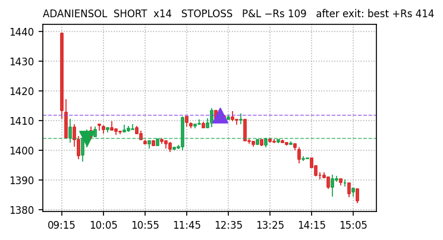
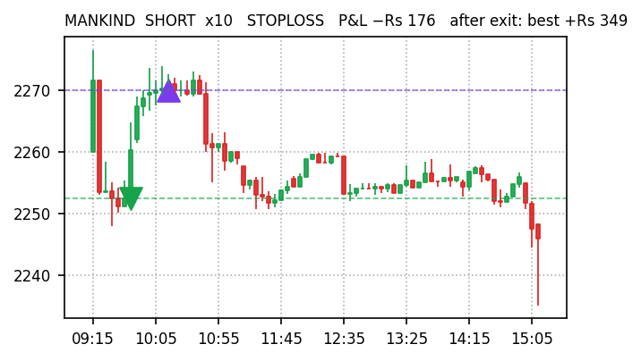
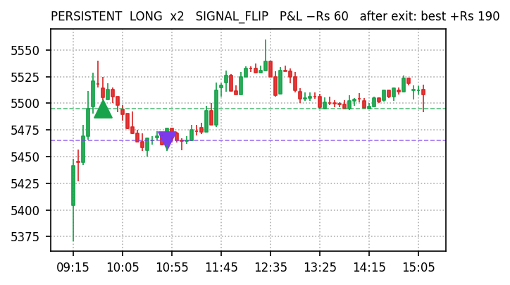
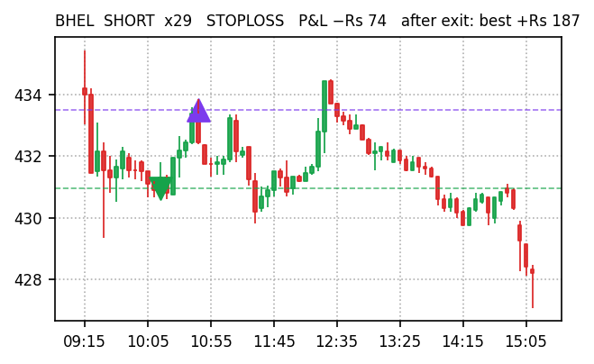
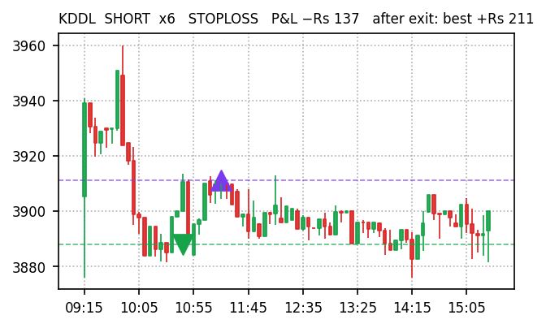
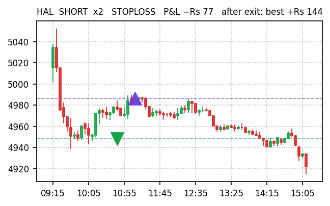
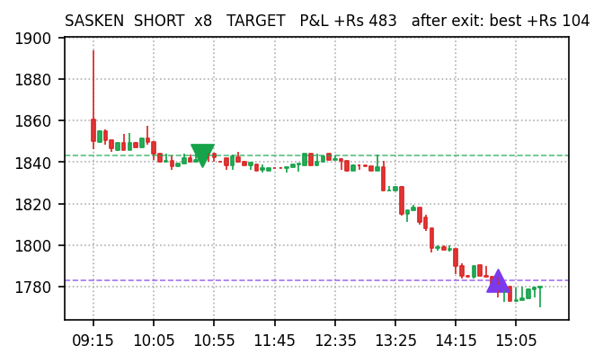
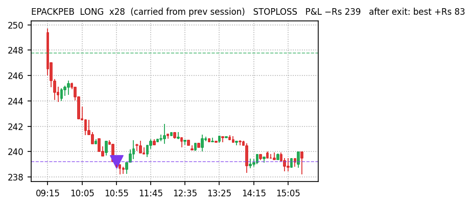

| Gross P&L | −Rs 1,328 |
| Net of costs | −Rs 2,123 (costs Rs 795) |
| Trades | 38 L 9 / S 29 |
| Win rate | 45% (17W / 21L) |
| Exit reason | # | P&L |
|---|---|---|
| STOPLOSS | 17 | −Rs 1,906 |
| SIGNAL_FLIP | 2 | −Rs 158 |
| TIME_EXIT | 19 | +Rs 735 |
| Held everything to 15:15 instead of exiting | +Rs 367 |
| Stop-losses that later reversed our way (11) | +Rs 1,016 |
| Perfect-exit ceiling after our exits (upper bound) | +Rs 1,808 |
| Max favourable excursion from entry | +Rs 2,748 |
| Gross P&L | −Rs 287 |
| Net of costs | −Rs 610 (costs Rs 323) |
| Trades | 11 L 5 / S 6 |
| Win rate | 27% (3W / 8L) |
| Exit reason | # | P&L |
|---|---|---|
| STOPLOSS | 10 | −Rs 770 |
| TARGET | 1 | +Rs 483 |
| Held everything to 15:15 instead of exiting | −Rs 743 |
| Stop-losses that later reversed our way (5) | +Rs 280 |
| Perfect-exit ceiling after our exits (upper bound) | +Rs 797 |
| Max favourable excursion from entry | +Rs 2,367 |
Every closed trade replayed against Kite 5-minute candles after the close: P&L if held to 15:15 (hold Δ), which stop-losses reversed afterwards, and how far price travelled our way after exit (ceiling). Trades exited at the 15:15 force-close count as zero.
| Stock | Dir | Exit | Time | P&L | Hold Δ | Ceiling |
|---|---|---|---|---|---|---|
| ADANIENSOL | SHORT | STOP | 09:40→12:23 | −Rs 109 | +Rs 402 | +Rs 414 |
| MANKIND | SHORT | STOP | 09:40→10:10 | −Rs 176 | +Rs 240 | +Rs 349 |
| PERSISTENT | LONG | FLIP | 09:40→10:45 | −Rs 60 | +Rs 86 | +Rs 190 |
| BHEL | SHORT | STOP | 10:13→10:43 | −Rs 74 | +Rs 154 | +Rs 187 |
| LODHA | SHORT | STOP | 09:40→11:15 | −Rs 163 | +Rs 39 | +Rs 122 |
| TECHM | LONG | STOP | 09:40→10:23 | −Rs 201 | +Rs 25 | +Rs 91 |
| TIINDIA | SHORT | STOP | 10:13→10:55 | −Rs 102 | +Rs 90 | +Rs 90 |
| TRENT | LONG | STOP | c/f→10:55 | −Rs 200 | −Rs 62 | +Rs 78 |
| Stock | Dir | Exit | Time | P&L | Hold Δ | Ceiling |
|---|---|---|---|---|---|---|
| KDDL | SHORT | STOP | 10:44→11:18 | −Rs 137 | +Rs 67 | +Rs 211 |
| HAL | SHORT | STOP | 10:44→11:08 | −Rs 77 | +Rs 129 | +Rs 144 |
| SASKEN | SHORT | TGT | 10:44→14:48 | +Rs 483 | +Rs 24 | +Rs 104 |
| EPACKPEB | LONG | STOP | c/f→10:54 | −Rs 239 | +Rs 8 | +Rs 83 |
| LTF | SHORT | STOP | 10:44→12:36 | −Rs 154 | +Rs 48 | +Rs 64 |
| SUNDRMFAST | LONG | STOP | 10:44→11:08 | −Rs 9 | −Rs 650 | +Rs 40 |
| ADANIENSOL | LONG | STOP | c/f→10:54 | −Rs 135 | −Rs 86 | +Rs 38 |
| LICHSGFIN | SHORT | STOP | 11:31→14:48 | −Rs 51 | +Rs 29 | +Rs 30 |
53 dashboard BUYs skipped by every engine: 14 rose more than 0.5% (wrong to skip), 23 fell more than 0.5% (right to skip), 14 flat. Gross upside on the wrong calls at Rs 11,000 each:
| Stock | Day move | At Rs 11K |
|---|---|---|
| NOCIL | +3.39% | +Rs 373 |
| CLEAN | +2.66% | +Rs 293 |
| ICICIPRULI | +1.98% | +Rs 218 |
| VOLTAS | +1.77% | +Rs 195 |
| MGL | +1.47% | +Rs 162 |
| BANDHANBNK | +1.44% | +Rs 158 |
| IREDA | +1.18% | +Rs 130 |
| PNB | +1.17% | +Rs 129 |
| BANKBARODA | +1.15% | +Rs 126 |
| VENKEYS | +0.99% | +Rs 109 |
| NBCC | +0.83% | +Rs 91 |
| CENTRALBK | +0.82% | +Rs 90 |
| CARTRADE | +0.62% | +Rs 68 |
| OFSS | +0.57% | +Rs 63 |
| Total gross | +Rs 2,204 |
green marker = our entryred candle downpurple marker = our exitdashed lines = entry / exit price








| Top-10 gainers 09:35 → 15:15, −3% stop | −Rs 6,054 (4 stops of 10) |
| v5 | −Rs 2,123 |
| v5_wide | −Rs 610 |
Did our scoring beat dumb? Positive engine minus baseline = yes.
| Engine | Actual | live | arm0.5 | arm0.3 | fixed |
|---|---|---|---|---|---|
| v5 | −Rs 2,123 | −Rs 1,504 | −Rs 1,345 | −Rs 1,399 | −Rs 1,504 |
| v5_wide | −Rs 610 | +Rs 673 | +Rs 600 | +Rs 571 | +Rs 673 |
Same entries, stops, targets; only the trailing arm differs. Compare bands to the replayed 'live' column, not to actual.
| Live regime BEAR book | −Rs 2,743 |
| Alternate SIDEWAYS book | −Rs 3,601 |
| Alternate − live | −Rs 858 |
| Snapshots · common trades · only-live · only-alt | 36 · 40 · 25 · 26 |
Gate after 10 sessions: alternate beats live by more than Rs 2,000 cumulative net → rebuild the classifier.
Sources: docs/paper-trades/*/2026-09-10.json · Kite historical 5-min · docs/reports/missed-trades-2026-09-10.md. Paper trading only, no real orders.